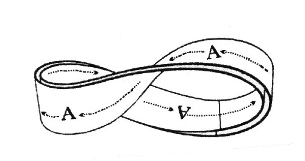
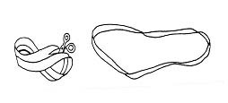
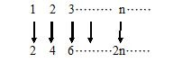
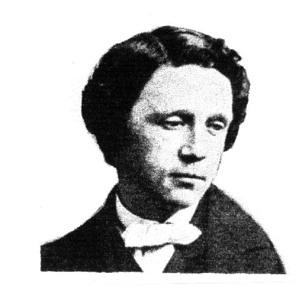
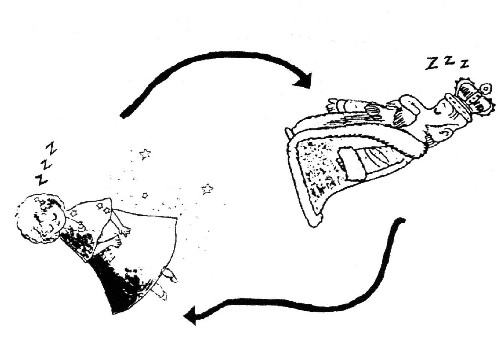

悖論
悖論是指一種推理過程：它看上去是合理的，但結果卻矛盾的。在悖論中，我們經常看到這樣的論調：由它的真，可以推出它的假；由它的假，可推出它的真。 悖論的主要形式有下列三種。 一、似非而是 “似非而是”是一種論斷看起來是錯的，但實際上卻是對的。 例1：若交換無窮級數各項的順序，則該級數之和會改變，譬如：
(1)S=1−1+1−1+1−1+
‧S=(1-1)+(1-1)+(1-1)+.......=0
- S=1+(-1+1)+(-1+1)+(-1+1)......=1
(2)S=1-2+4-8+16-32+......
- S=(1-2)+(4-8)+(-16+32)+......=(-1)+(-4)+(-16)+......=-∞
- S=1+(-2+4)+(-8+16)+......=1+(2)+(8)+......=∞
- S=1-2+4-8+16-32+......=1-2(1-2+4-8+16-32......=1-2S
得：S=1/3

圖1：將“A”字繞莫比烏斯帶。
例2：若一個人將“A”字沿著莫比烏斯帶（Mobius strip）面繞一圈回到原點，結果他發現“A”字走過莫比烏斯帶的兩面，且“A”字變成“"”字，再從“"”字變“A”字回到原點。（圖1） 若將莫比烏斯帶沿中線剪開，得到的是一個帶子，不是兩個帶子（圖2）。

圖2：將莫比烏斯帶沿中線剪開，得到的仍是一個帶子。
例3：自然數的個數等於偶數的個數。
部分少於全體。對於有限集合來說是理所當然的。譬如1, 2, 3, 4, 5, 6, 7, 8, 9, 10的個數比2, 4, 6, 8, 10個數大。但是全體的自然數1, 2, 3, 4, 5, 6,………n……，把它去掉奇數成為2, 4, 6,……n……的偶數集合。請問自然數的個數大？亦或偶數的個數大？1874年德國數學家康托爾（G. Cantor）利用配對原則把它們配對起來：

康托爾發現自然數集與偶數集之間可建立了一個一一對應方式。因此推論這兩個集合包含同樣的個數。用完全相同的方法，我們可以在自然數集與具有下列形式的數字集：10, 100, 1000, 10000, ………之間建立起一個一一對應。為此，只需把自然數n對應於數字10n，即可得n→10n。這樣就建立起所要求的一一對應。用同樣方法，我們可以在自然數集與自然數平方的集之間建立n→n2之對應。數學家們已知道自然數、整數、偶數、奇數及有理數，它們之間都可建立一一對應。他們也稱這些數集是可數集合。除了可數集合外，有沒有不可數的數集呢？康托爾證明了無理數集或實數集是不可數的。它們的數目遠比自然數大很多。
二、似是而非
“似是而非”是一種論斷看起來好像是對的，但實際上卻錯了。這往往是由於忽視了一些概念和論斷的適用範圍，超出其應用範圍而冒然使用這些概念和論斷，從而導出謬論。
例1：若將有限集的性質應用無限集就可得得出錯誤的結論。
譬如：假設：∞表示無窮大，將∞加5之後仍為∞，因此：
∞＋5＝∞
若從兩邊減∞，即得：
5＝0
又把∞乘以2後仍為∞，因此，
2‧∞＝∞
若兩邊除以∞，即得 2＝1
由於會發生如上述的錯誤現象，故絕對不要把∞當作有限數處理。
例2：錯誤的開平方
譬如：1-3=4-6
所以：1-3+9/4= 4-6+9/4............ (1)
因為：a2-ab+ b2/4= (a-b2/2)2
故若設 a＝1，b＝3
則：1-3+9/4=(1-3/2)2……………(2)
若設：a＝2，b＝3
則：4-6+9/4=(2-3/2)2………(3)
由(1)、(2)、(3)得：(1-3/2)2=(2-3/2)2
即：1-3/2=2-3/2
所以1＝2
為什麼會有錯誤呢？ 我們的回答是，此問題計算至：
(1-3/2)2=(2-3/2)2為止是正確，但是因而導出1-3/2=2-3/2，並進而導出1＝2的部分就錯了。
事實上，從a2=b2 可以得a＝b或a＝－b 故在上列的計算中以為只能得a＝b就是錯的地方，事實 上，至(1-3/2)2=(2-3/2)2為止是正確的，而接下去應該是1-3/2=2-3/2或1-3/2=-(2-3/2)。
又，因為1-3/2=2-3/2不可能成立，故應變成1-3/2=-(2-3/2)。
例3：以零去除任何數。
譬如：任意非零的兩數a，b，且a＝b；
若兩邊乘以a，則a2=ab；
若從兩邊減b2，則a2-b2=ab-b2；
把兩邊分解因式，即得：
(a+b)(a-b)=b(a-b)……………….(1)
兩邊除以a－b，得a＋b＝b 從兩邊減b，即得a＝0 因此，所有的數都等於零。會產生這種矛盾的原因，完全是(1)式用a－b＝0去除的原因。
例4：芝諾（Zeno）悖論： 西元前五世紀古希臘哲學家芝諾曾提出阿基里斯（Achilles）和烏龜賽跑的悖論。阿基里斯是古希臘一位善跑的戰將。芝諾假設阿基里斯比烏龜跑得快十倍。烏龜先跑100公尺，阿基里斯再開始追它，如此阿基里斯卻永遠趕不上它。因為阿基里斯到達龜的起點時，烏龜已又在他前面10公尺，當他再跑10公尺時，烏龜又跑1公尺，他又往前跑1公尺時，烏龜又前進0.1公尺，如此類推，雖然阿基里斯逐漸接近烏龜，但芝諾說，烏龜總跑在阿基里斯的前面一點點，阿基里斯絕對趕不上烏龜。可是經驗告訴我們，阿基里斯很快的超越過烏龜。
三、一系列推理看起來好像自圓其說，可是卻導致邏輯上自相矛盾
例1：說謊者悖論：
克利特（Crete）島上的伊比孟德斯（Epimenides）說：「所有的克利特島上的人都是說謊的人。」如果他說的是實話，那麼克里特人都是說謊者，而伊比孟德斯是克利特人，他必然說了假話。如果他確實說謊，那麼克里特人就不一定都是說慌者。因此出現邏輯上的矛盾，這個悖論是古希臘人在西元前六世紀提出的。
例2：理髮師悖論：
著名理髮師悖論是英國人羅素（B.A.W. Russel）提出的。一個理髮師招牌上寫著：我給城裡一切不自己刮臉者刮臉，我也只給這些人刮臉。請問！誰給這位理髮師刮臉呢﹖如果他自己刮臉，那他屬於自己刮臉的那類人，按其規定他不能自己來刮。如果由別人給他刮臉，那他就屬於不自己刮臉者，按其規定他要給不自己刮臉者刮臉，因此其他任何人不能給他刮臉。
例3：“這句話有八個字”（這句話有幾個字？七個字？！顯然與原句說有八個字不符，但說原句有八個字是對的，又與實際不符。）
例4：在牆壁上張貼布告“不準張貼”。

圖3：路易斯‧卡羅爾（Lewis carroll）

圖4：愛麗絲正夢見國王，國王也同樣夢見愛麗絲，只要愛麗絲一醒國王就馬上消失，同樣國王一醒愛麗絲也會消失。
例5：最有趣的是數學家兼作家路易斯‧卡羅爾（Lewis carroll，英國人，1832～1898年）（圖3）在〈愛麗斯鏡中遊記〉中，有一段愛麗絲夢見國王，國王也正在夢見愛麗絲的故事。根據路易斯的寫法，愛麗斯碰到了紅色國王。國王睡著了，〈特威德勒弟〉告訴愛麗斯，國王正夢見她，她只是國王睡夢中的人，實際上並不存在的，只要國王醒來，愛麗絲就會消失了。實際上愛麗絲也在作夢夢見國王，因此只要愛麗絲一醒，國王也會消失（圖4）。